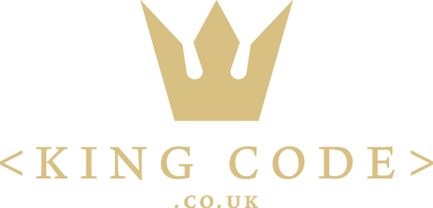

<!DOCTYPE html PUBLIC "-//W3C//DTD XHTML 1.0 Transitional//EN" "http://www.w3.org/TR/xhtml1/DTD/xhtml1-transitional.dtd"><html xmlns="http://www.w3.org/1999/xhtml"><head><meta http-equiv="content-type" content="text/html;charset=UTF-8">

<meta charset="UTF-8">
<meta http-equiv="Content-Type" content="text/html; charset=utf-8">
<meta http-equiv="X-UA-Compatible" content="IE=edge,chrome=1">
<meta name="viewport" content="width=device-width, initial-scale=1.0, maximum-scale=1.0, user-scalable=no">
<meta name="google-site-verification" content="MaU7baWWrEjrqG8OsqSctQTtkQ6ujhstreyK1d5gXkc">
<meta name="ahrefs-site-verification" content="12087e3ea5805ca83cac9aab62259e4f861670b2e94b42db700de7744028f4d4">
<meta name="yandex-verification" content="55a21d82a563a57b">
<meta name="twitter:card" value="summary">
<meta property="og:locale" content="en_US">
<meta property="og:title" content="KingCode | Winning Digital Solutions">
<meta property="og:description" content="KingCode is the #1 SEO company in the UK.We have provided SEO services for many UK companies.">
<meta property="og:type" content="website">
<meta property="og:url" content="https://www.kingcode.co.uk/">
<meta property="og:site_name" content="KingCode Digital Agency">
<meta property="og:image" content="../static/images/og-image-01.png">
<title>Why SEO more than just rankings - UPDATED</title>
<meta name="description" content="SEO is not just a search engine ranking. Search engines always work to provide their users with the best possible results. That’s why they intend to put">
<link rel="icon" type="image/png" href="../static/images/favicon.ico">
<link rel="stylesheet" href="../../stackpath.bootstrapcdn.com/bootstrap/4.1.3/css/bootstrap.min.css" crossorigin="anonymous">
<link rel="stylesheet" type="text/css" href="../static/css/slick.css">
<link rel="stylesheet" type="text/css" href="../static/css/slick-theme.css">
<link rel="stylesheet" type="text/css" href="../static/css/main.css" media="all">

<script src="../../www.googletagmanager.com/gtag/js" type="f1a71d53c734e3df087a5dc9-text/javascript"></script>

<script type="f1a71d53c734e3df087a5dc9-text/javascript">
		! function (f, b, e, v, n, t, s) {
			if (f.fbq) return;
			n = f.fbq = function () {
				n.callMethod ?
					n.callMethod.apply(n, arguments) : n.queue.push(arguments)
			};
			if (!f._fbq) f._fbq = n;
			n.push = n;
			n.loaded = !0;
			n.version = '2.0';
			n.queue = [];
			t = b.createElement(e);
			t.async = !0;
			t.src = v;
			s = b.getElementsByTagName(e)[0];
			s.parentNode.insertBefore(t, s)
		}(window, document, 'script',
			'https://connect.facebook.net/en_US/fbevents.js');
		fbq('init', '410331106460614');
		fbq('track', 'PageView');
	</script>
<noscript></noscript>


<script src="../../www.googletagmanager.com/gtag/js" type="f1a71d53c734e3df087a5dc9-text/javascript"></script>
<script type="f1a71d53c734e3df087a5dc9-text/javascript">
		window.dataLayer = window.dataLayer || [];

		function gtag() {
			dataLayer.push(arguments);
		}
		gtag('js', new Date());

		gtag('config', 'UA-143891312-1');
	</script>

<script type="f1a71d53c734e3df087a5dc9-text/javascript">
		(function (m, e, t, r, i, k, a) {
			m[i] = m[i] || function () {
				(m[i].a = m[i].a || []).push(arguments)
			};
			m[i].l = 1 * new Date();
			k = e.createElement(t), a = e.getElementsByTagName(t)[0], k.async = 1, k.src = r, a.parentNode.insertBefore(k,
				a)
		})
		(window, document, "script", "https://mc.yandex.ru/metrika/tag.js", "ym");

		ym(54457120, "init", {
			clickmap: true,
			trackLinks: true,
			accurateTrackBounce: true,
			webvisor: true
		});
	</script>
<noscript>
		<div></div>
	</noscript>


<script type="f1a71d53c734e3df087a5dc9-text/javascript">
		(function (w, d, s, l, i) {
			w[l] = w[l] || [];
			w[l].push({
				'gtm.start': new Date().getTime(),
				event: 'gtm.js'
			});
			var f = d.getElementsByTagName(s)[0],
				j = d.createElement(s),
				dl = l != 'dataLayer' ? '&l=' + l : '';
			j.async = true;
			j.src =
				'https://www.googletagmanager.com/gtm.js?id=' + i + dl;
			f.parentNode.insertBefore(j, f);
		})(window, document, 'script', 'dataLayer', 'GTM-KPDC95D');
	</script>


<noscript><iframe src="https://www.googletagmanager.com/ns.html?id=GTM-KPDC95D" height="0" width="0" style="display:none;visibility:hidden"></iframe></noscript>

<script type="f1a71d53c734e3df087a5dc9-text/javascript">
		gtag('config', 'AW-722911980/maqcCM7nmqgBEOyF29gC', {
			'phone_conversion_number': '(855)-681-0959'
		});
	</script>
</head>
<body>
<nav class="navbar navbar-expand-lg navbar-dark bg-tr" id="navbar">
<a class="navbar-brand" href="../index.html">
<span></span>

</a>
<button class="navbar-toggler collapsed" type="button" data-toggle="collapse" data-target="#navbarNav" aria-controls="navbarNav" aria-expanded="false" aria-label="Toggle navigation">
<span class="navbar-toggler-icon"></span>
</button>
<div class="collapse navbar-collapse" id="navbarNav">
<ul class="navbar-nav ml-auto">
<li class="nav-item">
<a class="nav-link" href="../index.html">Home</a>
</li>
<li class="nav-item dropdown">
<a class="nav-link" href="../index.html" id="navbarDropdown" role="button" data-toggle="dropdown" aria-haspopup="true" aria-expanded="false">
Services
</a>
<div class="dropdown-menu" aria-labelledby="navbarDropdown">
<a class="dropdown-item web" href="../web-design/index.html">Web Design & Development<span class="sub">Responsive Web Design Solutions</span></a>
<a class="dropdown-item digital" href="../seo/index.html">Search Engine Optimization<span class="sub">Enjoy the view from the top of the google search results.</span></a>
<a class="dropdown-item brand" href="../branding/index.html">Branding Identity & Graphic Design<span class="sub">Logo and Social Media Design</span></a>
<a class="dropdown-item pr" href="../pr/index.html">PR Services<span class="sub">Promotion Services</span></a>

</div>
</li>
<li class="nav-item">
<a class="nav-link" href="../about/index.html">About Us</a>
</li>
<li class="nav-item">
<a class="nav-link" href="../portfolio/index.html">Portfolio</a>
</li>

<li class="nav-item">
<a class="nav-link" href="../glossary/index.html">Glossary</a>
</li>
<li class="nav-item">
<a class="nav-link" href="../blogs/index.html">Blog</a>
</li>
<li class="nav-item">
<a class="nav-link" href="../contact/index.html">Contact Us</a>
</li>
</ul>
</div>
</nav>
<section class="blog-detail">
<div class="container">
<div class="row">
<div class="col-sm-12">
<div class="meta-box">
<div class="featured-image-box" style="background-image: url('/media/posts/2019/09/06/rank.svg');">
</div>
<h1>Why SEO more than just rankings - UPDATED</h1>
<p class="blog-short">SEO is not just a search engine ranking. Search engines always work to provide their users with the best possible results. That’s why they intend to put higher the sites that satisfy the</p>
<p><span class="blog-author-and-date"><i>Shahin Shakarli</i></span></p>
<p><span>Feb.05,2019</span> Viewed <span></span></p>
 <div class="sharethis-inline-share-buttons"></div>
</div>
</div>
</div>
</div>
</section>
<section class="blog-content">
<div class="container-fluid">
<div class="row">
<div class="col-md-3">
<div class="left-sidebar">
<div class="table-of-contents"></div>

</div>
</div>
<div class="col-md-6">
<div class="insidePage">
<article>
<div class="all-questions">
<p>Running a business is not a simple job, and sometimes it is compared to taking part in a marathon. There are a number of perfect participants (competitors), and the distance (business targets) is very long. You cheer up yourself to the limit to get the main purpose. You want to be at the top. Everybody knows that today the online appearance is crucial for the desired results. On the other hand, we cant say that the website by itself is a full resolution to this issue. Creating a site is the first step. However, you need to put some effort to make the website work on you and raise your income. <a href="../differences-result-driven-affordable-seo/index.html">Search Engine Optimization</a> (SEO) is a vital Influential marketing tool to support you to handle this business successfully.</p>
<p></p>
<p>�</p>
<p>�</p>
<p>�</p>
<p>The statistics describe exciting facts about taking advantage of SEO. Regarding the information, 66% of small business owners admit that searching new clients is the top attention. 40% say that retaining clients is their primary goal. 43% claim that enhancing customer experience and retention is their top strategy for income increase. However, just 17% of website owners are investing in search engine optimization!</p>
<p>It seems that the majority of business owners ignore an excellent chance of obtaining new customers and increasing their business profitability. However, why do they do it? Maybe, the only logical answer is that they do not have enough information and they havent realized their benefit from SEO yet.</p>
<p>�</p>
<h3>SEO and attractive opportunities for Search Engine Optimization</h3>
<p></p>
<p>We can clarify SEO conception as an improvement and settings due to search engines. What is a fundamental service of SEO? Search engine optimization tries to overlap your website content to potential customer search results. Also, Search Engine Optimization can show your site in the top ranks.</p>
<p>However, SEO is not just for improving the content. The color choice for website, content creating, the primary coding system, site traffic, downloading speed - all these actions are the details of SEO.</p>
<h3>Why SEO?</h3>
<p>When you do <a href="../digital-marketing/index.html">digital marketing</a>, the most effective tools for you are the website of the company and social media profiles. If you are creating a site, make sure that you have a reliable search engine optimization system. For example, your site should support your product qualification and can present all sorts of your brands accurately. The main purpose is getting excellent quality in the short term. An effective SEO service must provide an optimized website, custom made a video, images, social media activity, content marketing and constant audit and optimization of this process. In this way, the site will show up in the top ranks of search results and more people will see it.</p>
<p>�</p>
<h4>The context of SEO workload</h4>
<p>If you are planning to do SEO, make sure that your targeted keywords are perfect. It means that the keywords should support the website for getting high ranks. An effective SEO workload should provide natural links, and clicks from search engines, social media tags.</p>
<p>Please, take into consideration that SEO is not an activity for once. You should refresh and update all optimizations frequently for better results.</p>
<p>The best choice is to select steady and regular actions for increasing value. Quick solutions are not effective in the long term. There are several programs for analyzing the source of the traffic and feedback system on your website.</p>
<p>�</p>
<h4>SEO provides usability</h4>
<p>�</p>
<p>SEO is not just a search engine ranking. Firstly, search engine optimization focuses on users. According to <a href="https://www.socialmediaexaminer.com/social-media-advertising-research/index.html">Social Media Examiner research</a>, 51% of business-to-consumer (B2C) marketers and 62% of business-to-business (B2B) marketers have already optimized their websites and blogs for mobile to improve SEO.</p>
<p>Search engines always work to provide their users with the best possible results. Thats why they intend to put higher the sites that satisfy the searchers. They implement their search results of the quality of the sites by meta-data about how users interact with them. To put it simply, they suggest that a website should keep fit if you plan it to take a top rank. İt means, optimizing your site for search engines, you dont have an option. Please take into consideration the details search engines pay attention during the search process.</p>
<p>�</p>
<h4>SEO assists you go with the time</h4>
<p>�</p>
<p>SEO helps you to stay in sync with the latest improvements not to fall behind. For instance, some years ago no one could imagine a website page loading within three seconds on his electronic device. Now there are a variety of tools that can help you to do speed optimization. I never started any project without optimizing website speed first. You will need to have a developer or you can hire short term freelancer to handle this task for you. But do not forget to audit the speed of new pages especially the ones you added later on..?</p>
<p>�</p>
<h4>SEO helps you to understand your potential clients clearly</h4>
<p>�</p>
<p>If you start to develop your SEO plan, you have to think deeply about your customer personas (generalized portraits of the ideal customers). Full knowledge of your potential customers is of essential importance when it comes to client holding and acquiring. In this way, you can provide your users with custom-tailored practices and make your site customer-centric.</p>
<p>�</p>
<h4>SEO Can Help You Outrace Your Competitors</h4>
<p>�</p>
<p>You should never forget that the competition in business is amazingly hard. SEO gives you a real chance to become a leader in this race. If your competitors arent among that 17 % investing in SEO mentioned above, it automatically puts you ahead of the competition. The search engine optimized website is always more likely to have more customers and make more sales.</p>
<h4><br>
You can measure the Search Engine Optimization success</h4>
<p>�</p>
<p>There is an aphorism that If you cannot measure it, you cannot improve it. This quote is also concerned about SEO. There are some freely accessible Search Engine Optimization tools to estimate the profit and income organic search can bring to your business. First of them is <a href="https://analytics.google.com/analytics/web/provision/?authuser=0#/provision/index.html">Google Analytics</a>. This fantastic tool from Google can assist you to paint the full picture by detecting keywords driving the most traffic, the top<a href="../landing-page-guidelines/index.html"> landing pages for search traffic</a>, top exit pages and much more. This information provides you with a chance of considering and establishing your SEO plans.</p>
<p>�</p>
<h4>SEO has an impact on the buying cycle</h4>
<p>�</p>
<p>Before purchasing something, customers are able to do the research. Thats one of the most notable benefits of the internet from a buyer point of view.</p>
<p>Using Search Engine Optimization tactics to deliver your message for good deals, pioneer services, and products, and the responsibility and importance of what you present customers will be a frame breaking.</p>
<p>If you carry out it correctly, it will also surely positively affect the buying cycle. Your services and products must be visible in the places people require them for creating a reliable connection. Local SEO lets possible customers discover the answers and improves visibility, and the businesses provide those answer.</p>
<p>�</p>
<h4>SEO is relevant for your budget</h4>
<p>�</p>
<p>For a professional Search Engine Optimization service, of course, you will spend money.</p>
<p>However, SEO is not costly in the grand scheme of things, and you will pay for most likely the things regarding a brands engagement and benefit.</p>
<p>Please do not consider it a marketing cost. Actually, it is a business investment. Moreover, like most things in the world, SEO will only be better with more investment and attention it gets.</p>
<p>�</p>
<h3>Social Media and SEO</h3>
<p></p>
<p>As we mentioned above, SEO has a lot of opportunities, and it is not only practicing the best technical implementations. It is necessary to know how some external methods will influence your website. One of these external processes is <a href="../social-media-pricing-social-media-market/index.html">social media</a> accounts. Technically, social media is a communication tool. Therefore, it can't increase the organic search results, but you can use the social contents for improving website traffic.</p>
<p>Social media are able to raise the number of new visitors and retain users. If you share interesting, informative articles and posts in your social channels, then you can get loyal users' trusts.</p>
<p>Although Google resists the social signal analyze thesis, it also confirms that the Google bots scan social media accounts like other websites. It means that every post, tweets or hashtags have an impact on brand awareness and brand interactions.</p>
<p>�</p>
<h3>The value of content</h3>
<p>�</p>
<p>It is an undeniable fact that search engines align with social network accounts. Especially, these accounts are critical for brand names. For example, if we search for General Electric in Google, we will see their Twitter and Instagram profile in the top ranks. It means that search engines estimate references from Twitter and Facebook similar to other pages. Google clarifies that bots can't manage billions of pages every day. It is also about the social network. Is there any difference between social SEO and traditional SEO? Honestly, many people think that these two concepts are the same. Yes, they are similar but some differences still exist. For example, when you post the links in social media profile, it gets "<a href="https://support.google.com/webmasters/answer/96569?hl=en/index.html">no follow tag</a>", and you cannot see it in the ranks.</p>
<p>Moreover, it is coherent that social media links are of high quality. Experts suppose that the networks have large web components. Furthermore, the content itself has enormous value. A useful content provides brands to enhance the existing audience and reach to potential customers. As a matter of fact, keywords are an essential component of content creating process. If we investigate Twitter, Facebook or Instagram for the best search results, then we will identify that the most significant accounts or profiles have robust keywords (besides impression).</p>
<p>�</p>
<h3>Influence of community</h3>
<p>�</p>
<p>Some research shows that internet users see social profiles as a sincere place. Usually, brand accounts create the first impression and express the content of the structure. Therefore, people are interested in high-level social accounts. This perception is beneficial for search engine optimization planning, and you can get better results in the search rankings.</p>
<p>In other word, search engines pinpoint your social network community size in order to evaluate your originality. Social media traffic is regularly concrete and simple proof. Quality indicators, fake and clickbait contents have always limited. They cannot get long term performance and impression. By the way, fake profiles don't have any interaction with brand accounts. That's why search engines don't estimate them. You shouldnt only focus on keywords. The point is that your posts, tweets, bios must contain the perfect keyword structure. Otherwise, you may face with spam risk.</p>
<p>�</p>
<p>Social media becomes a search engine prototype nowadays. Users search for different things in social media profiles (restaurants, cinema, shopping and so on). It means that they can easily find your content and interact via social channels.</p>
<p>�</p>
<p>For instance, consider Pinterest. As you create your account, you are able to make the content searchable, and you can share it. Thanks to social features, it can communicate with people with your posts. Usually, users share posts which are interesting for them. Of course, followers will see your activities if you share the post public. Accordingly, in order to benefit from social networks, the first thing is to optimize profiles for keywords. For right keywords, it is essential for links, summary, picture subtitles, headlines and Bio of each account.</p>
<p>�</p>
<p>As a result, keywords bring about people to see your social account, your website, and finally your brands. Keywords have many chances. You can use it in your blogs and advertising campaigns. If you research keywords on Youtube, then you can get traffic not only for Youtube company but also for other social profiles. Digital marketers must get maximum benefits from social media for search engine optimization work. Social media is growing day by day and following its steps that are vital.</p>
<p>�</p>
<h3>Search Engine Optimization = Better User Experience</h3>
<p></p>
<p>Several businesses and brands admit that they require SEO for the digital resources, and the advantages their business will get from this Search Engine Optimization work being fulfilled on their behalf.</p>
<p>SEO will undoubtedly increase a websites overall visibility and searchability. However, is there any other real value that SEO suggests? Why is search engine optimization so critical for user experience?</p>
<p>The following reasons may give some clarity, regardless of the business size and industry, as to why every business needs Search Engine Optimization to take the brand to the next stage.</p>
<p>�</p>
<h3>SEO provides your doorstep with targeted traffic</h3>
<p>�</p>
<p>Its quite apparent that your visibility depends on the extension of traffic to your site. Frankly speaking, if you don't target your traffic, then it cant earn you any money. The value of targeted traffic is apparent, and you cant overvalue it. It rapidly affects the benefits as well as sales. SEO is a significant tool to guarantee that the large majority of your site visitors do have some interest in your business and brand, service or product. Thats why theres a high opportunity that you will get an advantage from their visit to your site. As a result, the higher is your website targeted traffic, the more likely that you will be successful.</p>
<p>�</p>
<h3>SEO is the website traffic's main driver</h3>
<p>�</p>
<p>A BrightEdge study observed that organic search drives 51% of all visitors to business-to-business (B2B) and business-to-consumer (B2C) websites, nevertheless paid search drives 15% of all guests to your site. It is not necessary to comment on this, because numbers speak for themselves. Organic search is a massive part of your businesss site performance, as well as a critical element of the customer funnel and eventually getting users to complete engagement or conversion.</p>
<p>As you know, Google has a significantly more substantial portion of the search market than its competitors like Bing, Yahoo, Baidu, DuckDuckGo, Yandex, or many others.</p>
<p>It doesn't mean that all search engines dont assist in a brands visibility. No, they do, but its just that Google possesses about 75 percent of the search market. Its the apparent leader, and therefore guidelines of Google are vital to follow.</p>
<p>However, the remaining part of the search market which the rest search engines manage is important for brands, too.</p>
<p>Google happens to be the most widespread email provider in the world (with more than 1,2 billion users) and also being the most clicked site in the world (as well as especially in the United States). By the way, YouTube is the second greatest search engine.</p>
<p>The investigations show that the majority of the people who have access to the internet visit Google at least once a day to see some information.</p>
<p>Being extremely noticeable as a trusted resource by Google and other search engines, business owners are regularly going to think in a brands favor. A high-quality website and Quality SEO guide brands there.</p>
<p>�</p>
<h3>SEO favors your trust & credibility</h3>
<p>�</p>
<p>If you permanently appear in the search results, then your potential customers will trust your brand. It raises awareness level in their minds that your product is popular and it commands. The searches or your potential customers scarcely recognize it, but high search rankings make your brand more credible in their point of view. As a result, they are likely to interact with your activity.</p>
<p>The purpose of an experienced SEO is to set a solid foundation for an excellent website with a useful, clean user experience that is easily disposable in search thanks to the credibility and trust of the product or service and its digital properties.</p>
<p>Many elements go into setting authority regarding search engines like Yandex or Google. Moreover, you can complete power over time as a determination of aspects like:</p>
<p>1) Positive user behavior, 2) quality backlink profiles, 3) content and optimized on-page elements, 4) machine-learning signals.</p>
<p>However, setting this authority will do more for a brand than most, if not all, other digital optimizations. The problem is, its tough to build credibility and trust within a day. You can earn and develop authority in the process of time.</p>
<p>Establishing a brand as an authority takes an effort, patience, and commitment, but also counts on offering a qualitative, valuable service or product that provides customers with the reason to trust your brand.</p>
<p>�</p>
<h3>What to do for better user experience</h3>
<p>�</p>
<p>If we ask, everybody will say that they want maximum visibility and better organic rankings. Although few of them think that good user experience is a significant element of getting there.</p>
<p>Google knows how to interpret a favorable and unfavorable user experience. In addition, positive user experience has occurred as the central part of the success of the website.</p>
<p>Clients know what they need. If they cant detect it, theres going to be a problem. Furthermore, performance will undergo.</p>
<p>A clear example of establishing a strong user experience is how Google has grown more and more of a response engine suggesting the reliable data right on the <a href="https://en.wikipedia.org/wiki/Search_engine_results_page/index.html">Search Engine Results Pages</a> (SERP) for users.</p>
<p>The aim here is offering users the information they are searching for easily, in fewer clicks and quickly. Quality SEO combines positive user experience, makes it strong to work in favor of the brand.</p>
<p>�</p>
<h3>What about Local SEO affection of engagement and traffic & conversions</h3>
<p>�</p>
<p>With the growing domination and increase in mobile traffic, local search has become a major part of the progress of small and medium-sized businesses.</p>
<p>Local SEO tries to optimize the digital properties for a particular vicinity. In order for people to find you easily and quickly, local SEO puts them a step closer to business.</p>
<p>This kind of optimization focuses on specific regions (like towns, cities, and even states), to build an appropriate medium for a brands note on a local level.</p>
<p>Search Engine Optimization pros achieve it by optimizing the website and content of your brand. It also includes backlinks and local citations, as well as local listings related to the business sector and location of the brand.</p>
<p>If you want to increase engagement on the local level, then your SEO pros should optimize a brands Google My Business listing, Knowledge Graph panel, and the social media profiles as a beginning.</p>
<p>It'd better have a strong emphasis on user reviews on Google, as well as other reviews websites like Home Advisor, Angies List, Yelp, depending on your activity or industry.</p>
<p>�</p>
<h3>The environment of the WEB</h3>
<p>�</p>
<p>World Wide Web (WWW) has an always-changing setting. Your challenge is to stay on high ranks as changes take place. However, remaining on top of search engine optimization involves being in the loop for the essential differences taking place for search. Understanding the environment of the Web, including methods being used by other local, comparable competitors and businesses, will always be useful for those products.</p>
<p>�</p>
<h3>Corporate with right SEO Agency</h3>
<p>�</p>
<p>As an owner and responsible person for a business, you may have a lack of time to carry out everything. You follow your deadlines, communicate with clients, try to improve customer satisfaction, manage your financial budget and so on. In a nutshell, to come through every duty by yourself is nearly impossible, and you will need professional support. In order to increase your SEO work, you may collaborate with an SEO agency. However, you will have some questions about choosing it in advance: What details should I take into account when searching for an SEO agency? How can I estimate its effectiveness? Here are the steps that will assist you in finding the right agency.</p>
<p>�</p>
<p>�</p>
<p>�</p>
<h3>Organize an elaborative meeting with your potential SEO agency</h3>
<p>�</p>
<p>First and foremost, do not believe sentences like "we need 1-2 months for high rank." or "use these keywords, and you are in the first place for 30 days." Search Engine Optimization is a period that requires patience. Success will come in four months minimum. We must emphasize that SEO shows its results during a year. Sure, it also depends on your business field and actions. But, the essential point is to wait for some period. This time (4 months) is somehow a barrier for good SEO.</p>
<p>Search Engine Optimization needs various strategies in each sector. These detected strategies will depend on two things: 1) the brand's potential; 2) opportunities of the business. The SEO agency should intend to get more information about your brand and product. If they do not do this, you may consider changing it.</p>
<p>�</p>
<h3>Check the references of SEO agency</h3>
<p>�</p>
<p>When you launch research for an SEO agency, you will probably observe the same references for different SEO agencies. It may be a little complicated situation. Why these SEO agencies have the same recommendations? Sometimes the companies work with varying agencies of Search Engine Optimization at the same time. However, the information may be false or deficient about references.</p>
<p>�</p>
<h3>Require a Technical SEO Audit</h3>
<p>�</p>
<p>SEO is a process that you can compute via data system. In the same way, you can evaluate the failure of SEO. Ask a preparation plan for your potential SEO agency. SEO agency can audit your website's visibility status, analyses of opponents, your keyword performance, technical platform problems, external value, etc. Also, the agency must provide you with information about the causes of problems, the solutions of them, and the prices for these actions. If they say that you have 404 errors, ask for these pages and control them rapidly. Additionally; 1. Ask for a prediction report for determined terms. 2. Ensure its flexibility.</p>
<h4>Decide if you want to work with this SEO agency�</h4>
<p>Try to evaluate all the details of the hiring process of the SEO agency. Their approach to your business, reactions for your demands, adaptation to your team, tolerance, the capability of analyses and research - all these aspects will help you to choose the right SEO agency. Please take into consideration that working with an SEO agency is not just a modern marketing activity. It is a strategic partnership for your future successes.</p>
<p>�</p>
<h3>Mobile SEO</h3>
<p></p>
<p>Today's SEO activity demands Mobile. You cant have Search Engine Optimization action without it. The mobile SEO is vital for search engine index.</p>
<p>Indeed, the mobile-first index just went out last year. However, Google has been declining not-so-little ideas for the past several years.</p>
<p>Google stated the mobile searches exceeded desktop in 2015. Then in 2016, the SEO world shook with mobilegeddon 2.0. Furthermore, in 2017, Google presented us with the mobile-first index. But some questions still remain: What should your mobile SEO plan be? Is it enough to have a mobile-friendly website?</p>
<p>The technological progress of both Google and Microsoft will mean significant changes to how you optimize for mobile, visual search, and voice. It is vital to know how to begin with mobile SEO. Go toward your future achievements with the fundamentals of mobile SEO.</p>
<p>�</p>
<h4>How Google behaves with Mobile Search</h4>
<p>�</p>
<p>If it isnt apparent yet, Google clearly supports mobile search. However, it can be a quite complicated perception of how Google deals with mobile searches. Heres the information about some general FAQs about Google and mobile search.</p>
<p>If you have separate desktop and mobile URLs which one does Google index?</p>
<p>For the desktop search, Google will show the desktop URL. Also, the mobile desktop searches will present a mobile URL. However, the indexed content (the critical part that finds out how your rank) will be from mobile.</p>
<p></p>
<p>�</p>
<h4>Is there any risk to lose ranking position with the Mobile-First Index?</h4>
<p>Actually, the mobile-first index does not change the ranking position. However, mentioning that mobile-friendliness is a ranking, it means the UX is essential. Google reviews mobile-friendliness page-by-page, and it comes to reason that youll need to update the money pages first.</p>
<p>�</p>
<p></p>
<p>�</p>
<h4>There is a secret you should know:</h4>
<p>Google needs both your mobile site and desktop to possess the same content. The mobile-first index doesn't influence you if you have the same content (for example, a responsive design). Moreover, Google sends notifications to webmasters about the mobile-first indexing is diminishing on your website.</p>
<h4>Is your website mobile-friendly?</h4>
<p>Some useful tools help you detect if your website is mobile-friendly. "Is your web page <a href="https://search.google.com/test/mobile-friendly/index.html">mobile friendly?</a>", "Test your mobile speed", "Use Fetch as Google for websites", "Make your web pages fast on all devices", "Responsive Design Testing across Devices."</p>
<h4>Best methods for Mobile SEO</h4>
<p>Lets divide how to optimize the website for mobile searches. Well begin by searching a few mobile SEO best techniques and practices that are true to all mobile websites.</p>
<p>Mobile content - To summarize mobile SEO, the website owner wants the same accurate content from the desktop on the mobile site. Each content formats (for example, text, images, videos, etc.) should be indexable and crawlable in the mobile version. Google updated mobile results, and their app to <a href="https://www.blog.google/products/search/new-badges-help-you-discover-and-take-action-image-search/index.html">display badges for the search of images</a>. It means those image base attributes that you have been neglecting are becoming even more appropriate in mobile searches. Consider that, if Google can already know <a href="https://www.blog.google/products/photos/puparazzi-alert-five-tips-your-pet-photos/index.html">cats and dogs breeds via pictures</a>, can you assume whats next? Plus, with the extension of voice search, maybe you want to think of arranging the website content.</p>
<p>For instance, the meta titles for mobile searches are shorter. That's why it is better to optimize them. Users complete voice search through a mobile device, so it is better to optimize the mobile website.</p>
<p>Voice searches = mobile devices. It means defining the way marketers work keyword research regularly. Long-form questions and inquiries are dominating the Search Engine Result Page (SERPs), which is why something like featured parts has a striking impression. Its about user purpose now.</p>
<h4>Performance of mobile website</h4>
<p>A few years ago, Google launched the <a href="https://googleblog.blogspot.com/2015/10/introducing-accelerated-mobile-pages.html">Accelerated Mobile Pages</a> Project to increase page load times, and website speed for mobile content. Now, page speed is a ranking element for mobile search (<a href="https://webmasters.googleblog.com/2018/01/using-page-speed-in-mobile-search.html">Speed Update</a>). Accelerated Mobile Pages Project allows content to be served and cached directly within a SERP (rather than transferring the guest to the original site). It is also the reason why the businesses will begin to see accelerated mobile project pages integrate with progressive web apps. It is better to use <a href="../web-design/index.html">responsive web-design</a> as well as accelerated mobile project pages. For instance, if you are an SEO agency, you might think about something to accelerate mobile project pages to help the services pages and blog posts.</p>
<p>�</p>
<h4>Setting the website mobile-friendly</h4>
<p>�</p>
<p>The main ways of making your website mobile-friendly are: 1. Responsive design; 2. Adaptive site; 3. Separate mobile website.</p>
<p>Update responsive design for mobile search - There is a wrong assumption that if your site is responsive, it means that your site will automatically be mobile-friendly. The responsive design keeps the same site content both in the desktop and mobile. It uses the same HTML, images, URLs, etc.</p>
<p>However, responsive design does not mean that your website will meet the needs of your mobile guests. Optimization of responsive design is essential for user experience. With that being said, Google has pronounced that responsive design is their favored choice for mobile SEO. �However, Google has verified there is not any ranking boost to get from possessing a responsive website. Further, those responsive sites are the most popular mobile-friendly websites keeping it down at 51.01 percent, based on a study by Appticles, published in Smashing Magazine.</p>
<p>Making an adaptive site for mobile search - An adaptive (RESS/dynamically served) website applies the same URL, but the server transmits a modified version of the HTML and CSS based on what kind of device is asking the webpage. Mostly, you have three various versions of your site: Desktop, mobile, and tablet.</p>
<p>Making a separate mobile website for mobile search - A separate mobile website is an entirely different site. The same primary search engine optimization principles continue to be the same for the mobile, tablet, and desktop but there are a few differences.</p>
<p>�</p>
<h3>Company blogs and SEO</h3>
<p>�</p>
<p>If you have a corporate blog but do not pay attention to SEO, you miss a critical chance to provide high-quality traffic to your site and develop lead generation. Here are required professional SEO hints sure to improve the <a href="https://en.wikipedia.org/wiki/Return_on_investment/index.html">Return-on-Investment</a> (ROI) of the company blog. The primary purpose of blog posts is to optimize contents for long-tail keywords not included on your main site, especially keywords with a high-buying intention. Your blog post template also must have conversion parts. If the user is excited about the blog post, display your phone number, a query form, and perhaps a link to the related service page on the website, in the template sidebar and footer.</p>
<p>Your blog post titles have to contain target keywords, and also it must be interesting for human readers. Union of the two goals can be exciting; a significant tool is the Emotional Marketing Value Headline Analyzer. It permits you to perform around with wording to obtain the right combination.</p>
<p>Publishing high-quality content is crucial for SEO for a lot of other reasons. Googles algorithm has enhanced its ability to recognize and reward original, authoritative and meaningful content. Of course, the company blog users are after the same thing. It means that the readers can identify blog authors by name, and the authors should have biogs on all posts or a separate page that sets the credibility.</p>
<p>Editing is another critical but neglected component of content quality. Blog posts full of spelling errors, grammatical errors, �unclear sentences, and no clear points will get a strict reject from Google, and even more necessary, from your current customers and potential ones. Edit your posts for meaning and scan for accuracy before publishing.</p>
<p>Evergreen blog posts are useful posts that note topics of continual concern. It serves SEO plans very well because they bring high-quality inbound links. Inform influential social media bloggers and participants in your niche, after publishing an evergreen post. If they like the post, they may link to it on their websites or blogs. Moreover, these links will not only support to boost your SEO, but they will also attract relevant and new <a href="../get-juicy-SEO-traffic-gaming-site/index.html">traffic to the company blog</a>.</p>
<p>If you publish an infographic on the blog, add the embed code at the bottom of the post, and check the embed code links to either the blog post or a related service page on the main website. Websites and blogs in the niche can take the embed code, and that's why easily reproduce the infographic. It can again supply you with high-quality links and new useful traffic.</p>
<p>You can invite influential bloggers in your niche or important niches to be guest content writers on your company blog. Such authors will improve the authority and quality of your blog content, and without any doubts, Google will see it. These guest authors will promote their guest posts, providing you with new traffic and new links. The point is to invite influential bloggers or authors selectively. It means that they must be credible and have credible websites. Furthermore, they should be experienced in their work and as writers.</p>
<p>If you manage your blog for a long time, there may be old blog posts that are out of date or no longer appropriate to your companies activity and blog concept. You can increase the global organic visibility of the website and strengthen the significance of the overall blog content by deleting such old blog posts. Additionally, you have an option to update and re-share the sturdy blog posts which are in the archive. It is a relatively simple method to attract new readers, social shares and links.</p>
<p>If you have an ongoing off-site publishing work underway as part of your <a href="../branding/index.html">branding campaign</a> or SEO, posts from your blog can be profitable for linking plans. Some off-site publishers do not like inserting links to company website product or service pages in guest post bios or bodies, as they are considered to be self-promotional. The identity of blog posts is to be more informational and less market-y compared with standard site content. Thus, more agreeable to publishers, they truly concerned about keeping the integrity of the content.</p>
<p>�</p>
<h3>Essential needs of SEO Strategy</h3>
<p>�</p>
<p>SEO is a useful process, and with right implementing you can get significant results. However, we spend less time discussing how to improve our SEO strategies.</p>
<p>While each SEO strategy should be different, there is a supportive plan for improving strategies. Now, we will introduce you four things that each SEO strategy must have.</p>
<p></p>
<p>�</p>
<h4>Set a mind map</h4>
<p>A <a href="https://en.wikipedia.org/wiki/Mind_map/index.html">mind map</a> is a place to develop your SEO strategy from the beginning of your work. A mind map is merely a branching list of categories which usually stands out from the middle and goes from more common to more specialized groups. We cannot say that a mind map is a visualization of the final strategy. A mind map is not an image for helping you display your plan, but it is here to assist you to think about it.</p>
<p>�</p>
<h3>The concept of visual representation</h3>
<p></p>
<p>You will need a more professional and in-depth document than the mind map when your strategy becomes more confident. A strategy is a system of plans. It means you have purposes, particular tasks attached to those purposes, some duties that must happen before others, recurring assignments that will need to be honed and iterated, and subtasks that will become more specific and diverse as time goes by. You need to be able to adjust all of these precisely and quickly to your teams and your customer. Additionally, you need to carry out so in a form that is mild enough for all parties to understand, and edit. You can use Google Sheets, Workzone, Basecamp, Trello or you can choose other application. Your method is more valuable than the particular tool for using it.</p>
<p>�</p>
<h4>Understand the company</h4>
<p>�</p>
<p>If you are an outsourced or in-house SEO, you need to possess a firm understanding of the business to make any SEO strategy strong. Try to learn what strengths you can develop to get the most SEO power, what methods will work best for the brand identity, and what is being in your plan. You can accomplish this understanding via questions like, "What is the unique selling of product proposition?", "What vision does the company support?", "What is the main shortage of the company right now?"</p>
<p>�</p>
<h4>Investigate your audience</h4>
<p>�</p>
<p>You cannot manage your SEO work without knowing your audience. It is the only way to set relevant keywords, create content, examine opponents, etc.</p>
<p>Here are some techniques you need to come about, either by speaking to the customer, browsing some related internet hangouts, surveying the audience, or all of the above.</p>
<p>�</p>
<h3>SEO and Brand building</h3>
<p></p>
<p>According to the <a href="https://biznology.com/page/46/?attachment_id/index.html">statistics of Biznology</a>, more than 85% of customers start to purchase with the assistance of search engines. The survey results demonstrate that only a few users halt to search from the first results. Usually, they seek other keywords similar to your business in the search rank.</p>
<p>The essential point is their encounter with your brand in every search results. It affects them to visit your web pages. Another advantage of SEO is if people had not paid attention to your brand, they would click on it to read extra about your products or services.</p>
<p><br>
�</p>
</div>
</article>
</div>
</div>
<div class="col-md-3" style="position: relative;">
<div class="right-sidebar">
<form action method="POST" class="side-form">
<h4>Contact Us for Free Consultation</h4>
<input type="hidden" name="csrfmiddlewaretoken" value="cvkqD3fzrByjdlcsMP0GkyAHC3Lz7WvgKEGOPNWnrFW5OtinirvCyd1XQanHa7ZH">
<input id="first_name" type="text" name="first_name" class="first_name" required="required" placeholder="First Name">
<input id="last_name" type="text" name="last_name" class="last_name" required="required" placeholder="Last Name">
<input id="email" type="email" name="email" class="email" required="required" placeholder="Email">
<input id="phone_number" type="phone" name="phone_number" class="phone" required="required" placeholder="Phone">
<input class="form-btn-green" type="submit" value="submit">
</form>

</div>
</div>
</div>
</div>
</section>
<section class="comment">
<div class="container">
<div class="comment-box">
<div id="disqus_thread"></div>
<script type="f1a71d53c734e3df087a5dc9-text/javascript" src="../../webzool.disqus.com/embed.js"></script>
<noscript>
                <p><a href="http://webzool.disqus.com/?url=ref">View the discussion thread.</a></p>
            </noscript>
<p><a href="https://disqus.com/index.html" class="dsq-brlink">blog comments powered by <span class="logo-disqus">Disqus</span></a></p>
</div>
</div>
</section>
<section class="blog-form-box">
<div class="container">
<div class="call-form-box">
<form method="POST" id="mailchimpform">
<input type="hidden" name="csrfmiddlewaretoken" value="cvkqD3fzrByjdlcsMP0GkyAHC3Lz7WvgKEGOPNWnrFW5OtinirvCyd1XQanHa7ZH">
<div class="row">
<div class="col-md-8">
<input id="email" type="email" name="email" class="form-field" placeholder="Enter Your E-mail">
</div>
<div class="col-md-4">
<input type="submit" id="email_submit" class="form-btn full-width-btn" style="margin-top: 0px;" value="Get Free eBook">
</div>
</div>
</form>
</div>
</div>
</section>
<section class="related-posts">
<div class="section-title text-center">
<h1>Hand-picked related articles</h1>
</div>
<div class="container">
<div class="row">
<div class="col-md-4">
<div class="blog-item">
<a href="../6-essential-seo-strategies-focusing/index.html" class="blog-image">
<div class="image" style="background-image: url('/media/posts/2019/09/06/seo-str.svg');"></div>
</a>
<div class="blog-content">
<h2 class="blog-title">6 Essential SEO Strategies You Should Be Focusing on in 2019</h2>
<p class="blog-desc">The vast array of different SEO strategies and creative marketing ideas serve as a ground for the future successful operation of the company. It is where one of the powerful tools named SEO strategies or Search Engine Optimization comes in and lends its support to the company.</p>
</div>
<div class="blog-footer">
<div class="col-sm-8" style="padding: 0px;">
<p class="author"><i class="far fa-user-circle"></i>Gunel Eyvazli</p>
</div>
<div class="col-sm-4" style="padding: 0px;">
<p class="date"><i class="far fa-calendar"></i>Feb. 06, 2019</p>
</div>
</div>
</div>
</div>
<div class="col-md-4">
<div class="blog-item">
<a href="../local-organic-professional-seo-consultant/index.html" class="blog-image">
<div class="image" style="background-image: url('/media/posts/2019/09/13/local-seo.svg');"></div>
</a>
<div class="blog-content">
<h2 class="blog-title">Local & Organic Professional SEO Consultant in the UK</h2>
<p class="blog-desc">As an SEO consultant Los Angeles, KingCode applies different techniques to deliver successful marketing strategies to have your site on the first page of search results.</p>
</div>
<div class="blog-footer">
<div class="col-sm-8" style="padding: 0px;">
<p class="author"><i class="far fa-user-circle"></i>Rhys Lacy</p>
</div>
<div class="col-sm-4" style="padding: 0px;">
<p class="date"><i class="far fa-calendar"></i>Aug. 12, 2019</p>
</div>
</div>
</div>
</div>
<div class="col-md-4">
<div class="blog-item">
<a href="../seo-copywriting-tips-secrets-strategies-in-2019/index.html" class="blog-image">
<div class="image" style="background-image: url('/media/posts/2019/09/09/type.svg');"></div>
</a>
<div class="blog-content">
<h2 class="blog-title">SEO Copywriting Tips, Secrets, and Strategies in 2019</h2>
<p class="blog-desc">SEO Copywriting is the tool for making your website visible. Its benefits last in the long run. Besides, you can save a lot of money for promoting your business.</p>
</div>
<div class="blog-footer">
<div class="col-sm-8" style="padding: 0px;">
<p class="author"><i class="far fa-user-circle"></i>Samira Valiyeva</p>
</div>
<div class="col-sm-4" style="padding: 0px;">
<p class="date"><i class="far fa-calendar"></i>Aug. 01, 2019</p>
</div>
</div>
</div>
</div>
</div>
</div>
</section>
<script type="f1a71d53c734e3df087a5dc9-text/javascript" src="../static/js/jquery-2.1.1.min.js"></script>
<script src="../../platform-api.sharethis.com/js/sharethis.js" type="f1a71d53c734e3df087a5dc9-text/javascript">
</script>
<script type="f1a71d53c734e3df087a5dc9-text/javascript">
    $(window).scroll(function () {
        $(window).scrollTop() >= 100 ? ($("nav").addClass("fixed-header"), $("nav a span").addClass(
            "visible-title")) : ($("nav").removeClass("fixed-header"), $("nav a span").removeClass(
            "visible-title"))
    }), $(document).on("click", ".dropdown-menu", function (e) {
        e.stopPropagation()
    }), $(window).scroll(function () {
        $(window).scrollTop() >= 500 ? $(".right-sidebar").addClass("fixed-b") : $(".right-sidebar")
            .removeClass("fixed-b")
    }), $(window).scroll(function () {
        $(window).scrollTop() >= 500 ? $(".left-sidebar").addClass("fixed-toc") : $(".left-sidebar")
            .removeClass("fixed-toc")
    });
    var el, title, link, toc = $("<ul></ul>").addClass("toc");
    $(".all-questions h3").each(function () {
        var e = $(this).text().replace(/[^a-zA-Z0-9 ]/g, "").replace(/\s/g, "-").toLowerCase();
        $(this).attr("id", e), el = $(this), title = el.text(), link = "#" + el.attr("id"), newLine =
            "<li><a href='" + link + "'>" + title + "</a></li>", toc.append(newLine)
    }), toc.prepend("<h4>Table Of Contents:</h4>"), $(".table-of-contents").prepend(toc), toc.find("a").on("click",
        function () {
            var e = $(this).attr("href");
            return $("html, body").animate({
                scrollTop: $(e).offset().top
            }, 500), !1
        });
</script>
<footer id="footer" class="footer">
<div class="container">
<div class="row">
<div class="col-md-2">
<div class="footer-box">
<h4 class="footer-title">Useful Links</h4>
<ul class="footer-nav">
<li><a href="../index.html">Home</a></li>
<li><a href="../about/index.html">About Us</a></li>
<li><a href="../portfolio/index.html">Portfolio</a></li>

<li><a href="../glossary/index.html">Glossary</a></li>
<li><a href="../blogs/index.html">Blog</a></li>
<li><a href="../contact/index.html">Contact Us</a></li>
</ul>
</div>
</div>
<div class="col-md-3">
<div class="footer-box">
<h4 class="footer-title">Our Services</h4>
<ul class="footer-nav">
<li><a href="../web-design/index.html">Web Design & Development</a></li>
<li><a href="../digital-marketing/index.html">Digital Marketing</a></li>
<li><a href="../branding/index.html">Branding Identity & Graphic Design</a></li>
<li><a href="../pr/index.html">PR Services</a></li>
<li><a href="../seo/index.html">SEO Audit</a></li>
</ul>
</div>
</div>
<div class="col-md-4">
<div class="footer-box">
<h4 class="footer-title">Latest Posts</h4>
<ul class="footer-nav">
<li><a href="../how-to-do-mobile-seo-in-2019-7-step-optimization/index.html">How to do mobile SEO in 2019: 7-step optimization guide</a>
</li>
<li><a href="../the-best-seo-strategy-you-need-in-2019/index.html">The Best SEO Strategy You Need in 2019</a>
</li>
<li><a href="../medical-seo-9-ways-to-get-a-top-google-ranking/index.html">Medical SEO: 9 Ways to Get a Top Google Ranking for Your Medical Website</a>
</li>
<li><a href="../local-organic-professional-seo-consultant/index.html">Local & Organic Professional SEO Consultant Los Angeles, California</a>
</li>
<li><a href="../seo-copywriting-tips-secrets-strategies-in-2019/index.html">SEO Copywriting Tips, Secrets, and Strategies in 2019</a>
</li>
</ul>
</div>
</div>
<div class="col-md-3">
<div class="footer-box">
<h4 class="footer-title">Contact Us</h4>
<ul class="footer-nav">
<li><i class="fas fa-phone-volume"></i><a>+1 (855)-681-0959</a></li>
<li><i class="far fa-envelope-open"></i><a><span class="__cf_email__" data-cfemail="fc8f9d90998fbc8b999e86939390d29f9391">[email�protected]</span></a></li>
</ul>
<h4 class="footer-title">Follow Us</h4>
<ul class="footer-social">
<li><a href="https://www.facebook.com/webzool/index.html"></a></li>
<li><a href="https://www.instagram.com/webzooldigital/index.html"></a>
</li>
<li><a href="https://www.linkedin.com/company/webzool/about/index.html"></a></li>
<li>
<a href="https://twitter.com/Webzool6/index.html">

</a>
</li>
</ul>
</div>
</div>
</div>
</div>
</footer>
<div class="footer-bottom">
<div class="container">
<div class="row">
<div class="col-md-4">
<div class="pt"><a href="../privacy-policy/index.html">Privacy Policy</a> and <a href="../terms/index.html">Terms Of Use</a></div>
</div>
<div class="col-md-4">

</div>
<div class="col-md-4">
<div class="copyright">
All rights Reserved by KingCode
</div>
</div>
</div>
</div>
</div>
<script data-cfasync="false" src="../cdn-cgi/scripts/5c5dd728/cloudflare-static/email-decode.min.js"></script><script src="../../stackpath.bootstrapcdn.com/bootstrap/4.2.1/js/bootstrap.min.js" crossorigin="anonymous" type="f1a71d53c734e3df087a5dc9-text/javascript">
	</script>
<script type="f1a71d53c734e3df087a5dc9-application/javascript">
		var piioData = {
			appKey: 'jxkoid',
			domain: 'https://kingcode.co.uk',
			lazyLoadingDistance: 'small',
			disableWebP: true
		}
	</script>
<script src="../../js.piio.co/jxkoid/piio.min.js" type="f1a71d53c734e3df087a5dc9-text/javascript"></script>
<script src="../../ajax.cloudflare.com/cdn-cgi/scripts/95c75768/cloudflare-static/rocket-loader.min.js" data-cf-settings="f1a71d53c734e3df087a5dc9-|49" defer></script>
</body></html>